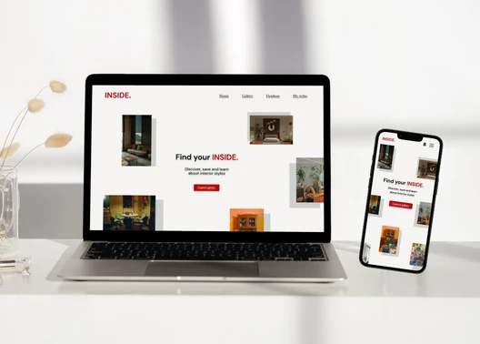
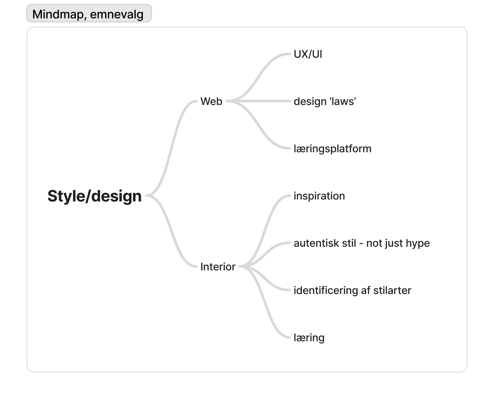
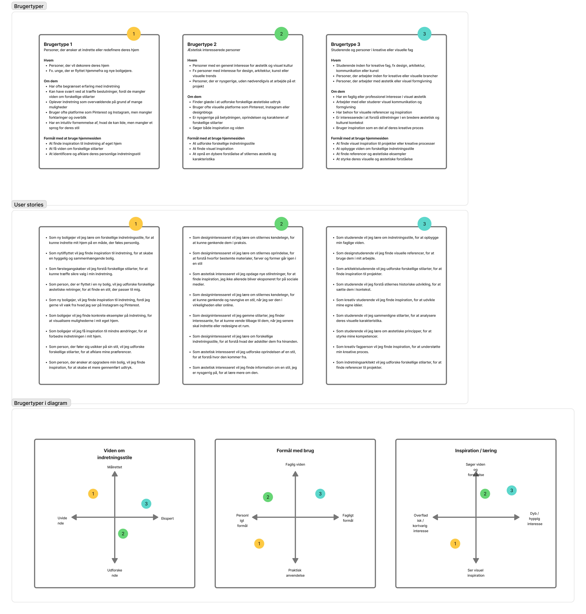
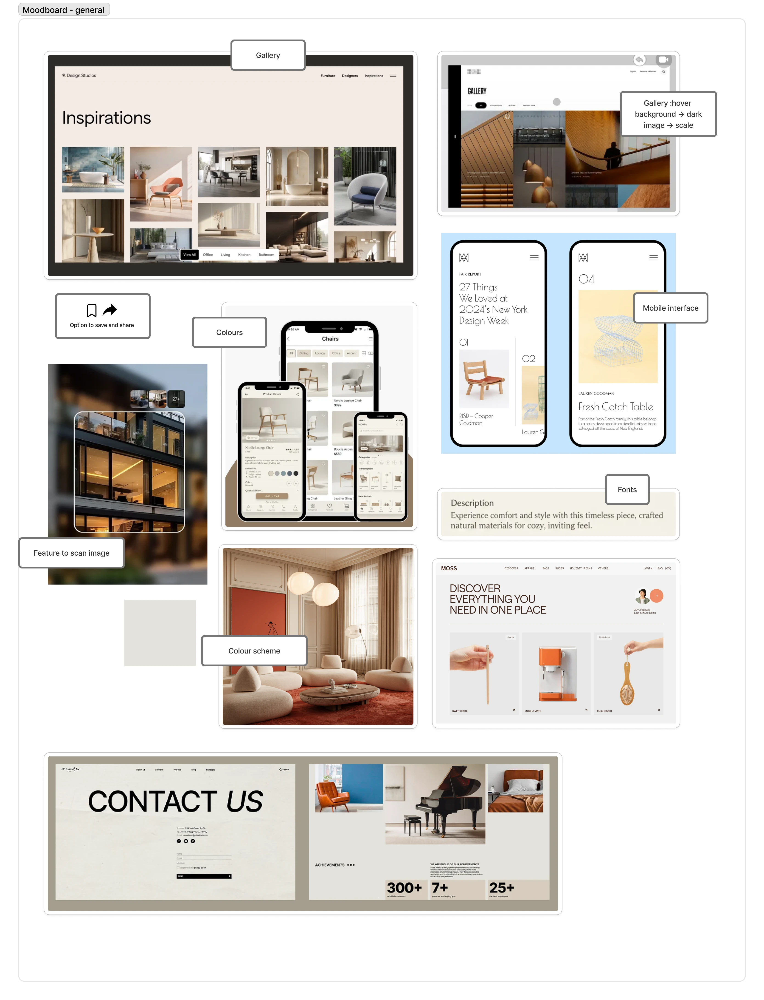
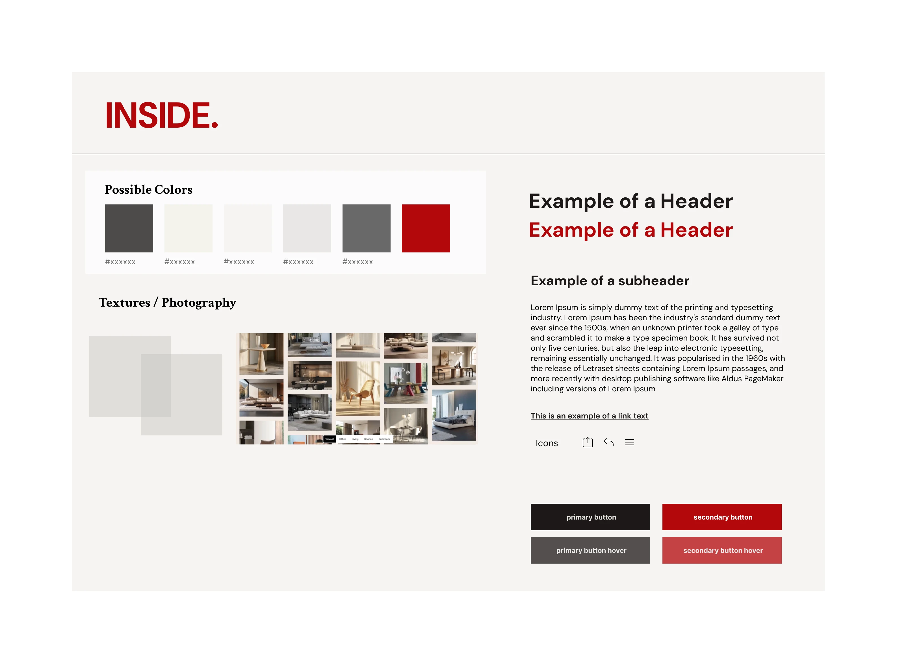
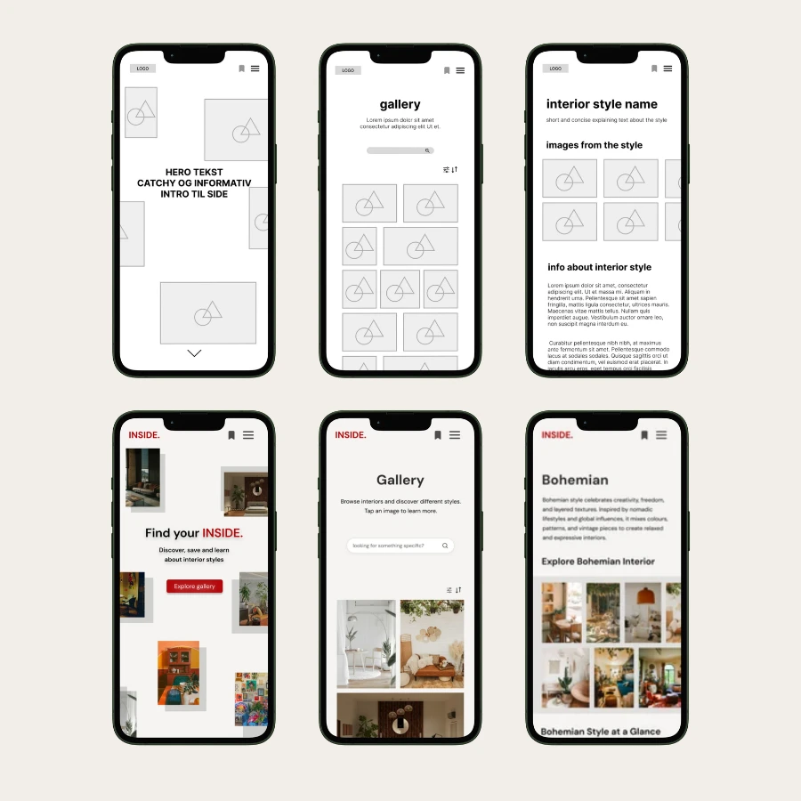
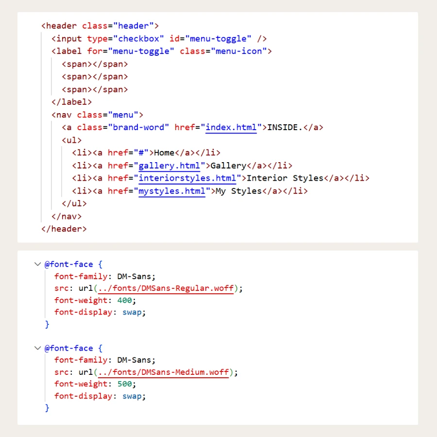

Tema 3
Grundlæggende UX/UI
I tema 3 arbejdede jeg med grundlæggende UX/UI gennem udviklingen af et emnesite. Temaet havde fokus på samspillet mellem brugere, indhold, design og brugergrænseflader. I stedet for kun at designe ud fra egne idéer, anvendte jeg research, test og brugerindsigter som en aktiv del af designprocessen.

Projektet: INSIDE.
Opgaven i tema 3 gik ud på at lave en hjemmeside baseret på et selvvalgt emne. Mit emnesite hed INSIDE. og handlede om indretningsstilarter. Idéen var at skabe en ikke-kommerciel inspirationsside, hvor brugere kan browse og lære om indretningsstilarter.
Projektet gav mig mulighed for at kombinere design, indholdsstruktur, brugerforståelse og kode. Det blev et tema, hvor jeg både styrkede mine kompetencer i Figma, HTML, CSS og metodisk kreativitet.
Proces
Herunder kan processen foldes ud i mindre dele. Den viser, hvordan jeg gik fra idé, research og brugerindsigter til prototype, test og færdigt kodet site.
Se evt mere dokumentation i FigJam.
Idé og emnevalg
Jeg valgte at lave et emnesite om indretningsstilarter, fordi emnet gav mig mulighed for at arbejde visuelt med æstetik, stemning og funktionalitet. Sitet fik navnet INSIDE. og skulle fungere som en inspirationsplatform, hvor brugeren kunne få overblik over forskellige stilarter og lære mere om dem.
Idéen var at skabe en side, der mindede om en mere informerende og ikke-kommerciel version af Pinterest, hvor fokus ikke var på køb, men på inspiration, viden og visuel forståelse.
Nedenfor ses hvordan jeg anvendte metoder som mindmap ifm. idégenerering.

Målgruppe og brugerforståelse
For at definere målgruppen arbejdede jeg med brugerrejser, brugertyper, user stories og matrix. Det hjalp mig med at konkretisere, hvem sitet skulle henvende sig til, og hvilke behov brugerne kunne have.
Jeg lærte at målrette hjemmesiden mod brugerne og deres behov og samtidig tænke brugertest og iterationer ind i processen.

Research og inspirationssøgning
Jeg arbejdede med desk research og inspirationssøgning for at undersøge lignende hjemmesider og visuelle referencer. Researchen blev brugt til at forstå, hvordan æstetiske universer kan formidles digitalt på en måde, hvor de samtidig er brugervenlige.
Jeg dokumenterede min research og samlede inspirationsmateriale i moodboards, hvilket gav mig et bedre grundlag for at træffe designvalg.

Moodboards, styletiles og visuel retning
Jeg brugte moodboards og styletiles til at undersøge forskellige visuelle retninger for INSIDE. Det gjorde processen mere konkret, fordi jeg kunne afprøve farver, typografi, stemning og visuelle elementer, før jeg gik videre til det egentlige layout.
Jeg testede mine styletiles med en Likert-test. Det var lærerigt, fordi resultaterne viste noget andet, end jeg havde forventet. Det blev en vigtig erfaring, som jeg har taget med videre.

Wireframes og prototype i Figma
Jeg brugte FigJam til at dokumentere processen og Figma Design til at udvikle både lo-fi og hi-fi prototyper.
Lo-fi wireframes hjalp mig med at fokusere på struktur og indhold, før jeg arbejdede mere detaljeret med det visuelle udtryk. Hi-fi wireframes var særligt nyttigt til at afprøve forskellige visuelle detaljer og komme frem til en endelig prototype.

Brugertest og evaluering
I temaet arbejdede jeg med flere former for test, blandt andet Likert-test, 5-sekunder-test, tænke-højt-test og Lighthouse-test. Testene gav mig nye indsigter, hvorfra jeg foretog iterationer.
Fra prototype til kodet site
Efter arbejdet i Figma skulle designet omsættes til et responsivt website med HTML og CSS. Her byggede jeg videre på den tekniske læring fra tema 2, men med et større fokus på at få design, indhold og brugeroplevelse til at hænge sammen.
Det var især udfordrende at oversætte nogle af mine kreative layoutidéer til kode. Når jeg mødte noget, jeg ikke kunne løse med det samme, undersøgte jeg mulighederne, researchede og eksperimenterede. For det meste kom jeg frem til løsninger, der fungerede. Processen fik mig mere interesseret i kode, fordi der virker til at være mange muligheder.

Refleksion
Tema 3 var nok mit yndlingstema i løbet af semestret. Efter at have arbejdet med et produkt i tema 2, som jeg efterfølgende oplevede som lidt visuelt kedeligt, tror jeg, at jeg reagerede ved at gå i den modsatte retning i tema 3.
Jeg syntes, det var spændende at arbejde med kreativitet på en mere metodisk og struktureret måde. Samtidig følte jeg, at der var god tid til både at sætte sig ind i projektet og arbejde med at få produktet til at fremstå, som jeg gerne ville have det.
Som nævnt i processen begyndte jeg her at undersøge mulighederne inden for HTML og CSS. Det har gjort mig mere selvsikker i forhold til kodning og givet mig mod på at eksperimentere med forskellige funktioner og former for styling.